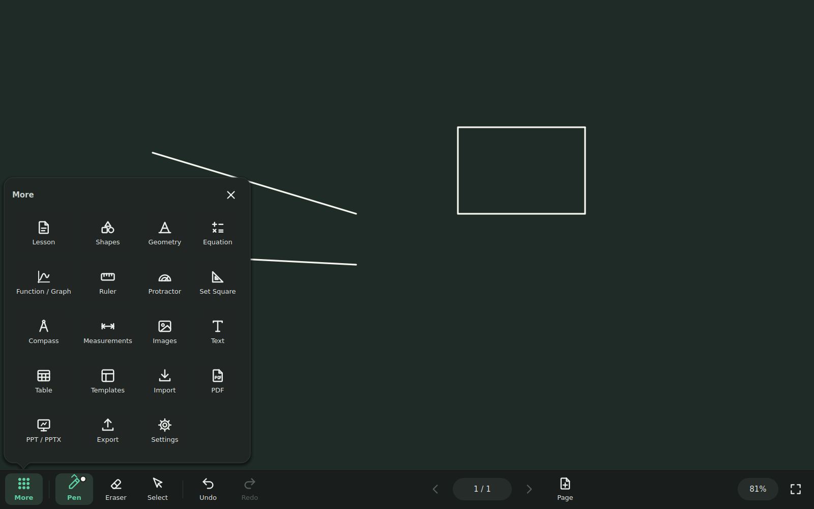
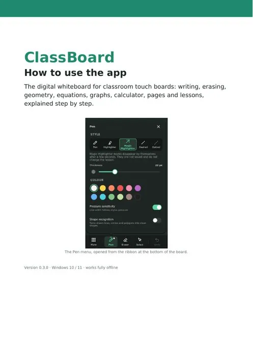
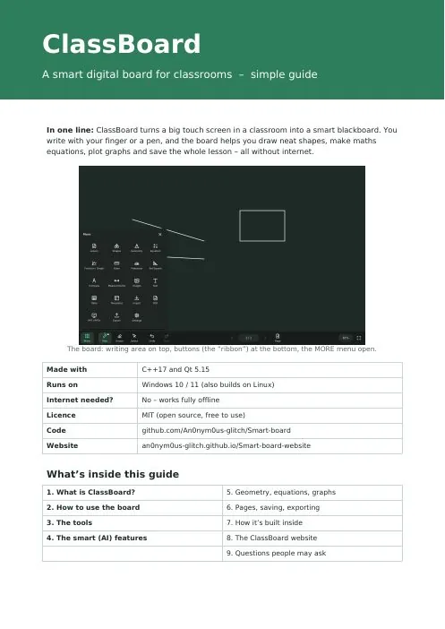
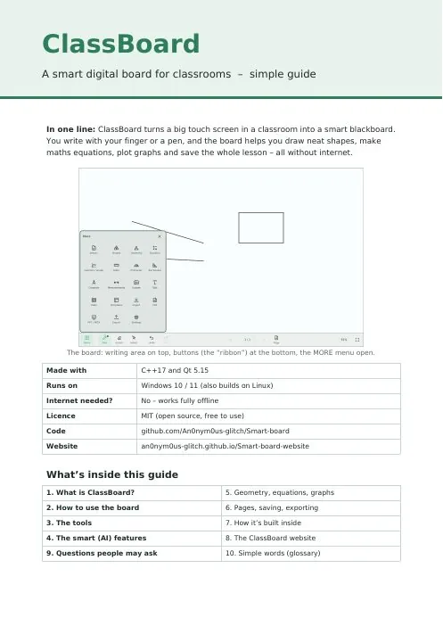

✎
Ink that feels right
Smooth pen, highlighter, dashed and dotted ink with stylus pressure. Optional shape recognition turns rough circles, lines and triangles into clean shapes.
ClassBoard is a digital whiteboard built for large interactive classroom displays. Ten-point touch, real geometry instruments, equations, graphs and a calculator — all fully offline on Windows 10/11.
New in v0.3.1
Is the toolbar at the bottom of the board too big for your display, or too small? Open More → Settings → Ribbon size and drag the slider. Try it on the board here.
Drag the slider: only the ribbon changes.
New in v0.3
Open it from More → Calculator: a scientific calculator with big touch keys, made for the classroom board. The one on the right works just like it, so go ahead and try it.
Also new: the PDF user guide is installed with the app and has its own Start-menu shortcut, and the third-party licence notices are installed with it too.
Everything on the board
The board fills the screen. The most-used commands sit in a ribbon along the bottom, and everything else opens as a popover right next to the button — so you stay on the board.
Smooth pen, highlighter, dashed and dotted ink with stylus pressure. Optional shape recognition turns rough circles, lines and triangles into clean shapes.
Point things out while you explain. Marks fade away by themselves after about five seconds and are never saved or undone.
Stroke, object and area erasers — or just wipe with three fingers or the flat of your hand. One wipe, one undo step.
Ruler, protractor with an angle stamp, 45° and 30/60° set squares, and a compass that draws arcs and circles.
Distance, angle, slope and area measurements that update as you move points. Snap to points and the grid. Set a scale like 10 cm = 1 km.
LaTeX-style input with a symbol palette and live preview: fractions, roots, integrals, sums, limits, matrices. The ✨ Magic Equation Maker turns handwriting into an editable formula — offline.
Plot several functions with automatic sliders for a, b, c…, zoom and pan, points that snap onto curves, vectors and value tables.
Make the bottom toolbar slimmer (60 %) or bigger (150 %) while you watch, so it suits your display. Menus keep their size, and your choice is remembered.
A scientific calculator with big touch keys: powers, roots, trig in DEG or RAD, ln, log, n!, % and Ans. Put on board writes the sum and its answer onto the page as an equation.
Thumbnail navigator with drag-to-reorder. 16:9, 4:3, A4, A3 or custom sizes. Blackboard, grid, dots, ruled, music staves, coordinate plane or your own image.
Export vector PDF, PowerPoint .pptx and PNG. Import PDFs, images, other lessons and .ppt / .pptx slides — each becomes a page.
Versioned .classboard files with atomic saves, autosave and crash recovery. One undo history across every tool.
Formatted text boxes, drag-and-drop or pasted images, and tables you can edit right on the board.
No account, no cloud, no tracking. Everything — including handwriting recognition — runs on the classroom PC.
Play with it
A taste of what the tools do on the board. Drag, slide and poke around.
90°
Every finger draws its own line.
Take a tour

Touch, pen & mouse
Every finger that touches the board writes its own line, so a whole group can work at the same time. Two fingers of one hand still zoom and pan, and while a pen is near the board your resting hand is ignored.
| Action | Touch | Pen | Mouse |
|---|---|---|---|
| Draw | one finger (up to 10) | pen tip | left button |
| Pan | two fingers | – | right / middle drag |
| Zoom | pinch | – | wheel |
| Erase | three fingers / flat hand | eraser end | – |
Download the installer, run it, and you're ready to teach. It installs like any other app: Start menu entry, desktop shortcut, .classboard files open with a double-click, and an uninstaller in Settings → Apps.
v0.3.1 · 41 MB · Windows 10/11 64-bit · Release notes · All releases · New here? How to use ClassBoard
.exe and double-click itAlready have ClassBoard? Run the new installer over it — your lessons and settings are kept.
Read & print
Start with the step-by-step manual to learn the app. The 12-page guide explains every tool, the smart features and how ClassBoard is built — read it on screen, or print the ink-saver edition for the staff room.

The illustrated user manual for ClassBoard 0.3.0. It walks you through the app from installing it to the last keyboard shortcut, with a screenshot next to every menu, the new Calculator, and a troubleshooting table at the end. It is also installed with the app.
🖨 Printing? Get the compact 9-page version (0.9 MB).

The complete guide with dark board screenshots, just as the app looks in class. Best for reading on a laptop, tablet or projector.

The same guide made for printing: light backgrounds, light screenshots and no big colour blocks, so it uses far less ink. Adds a mini glossary and a lined notes page.
For developers
ClassBoard is written in C++17 with Qt 5.15. You need CMake ≥ 3.16, a C++17 compiler (MSVC 2019/2022, GCC 9+ or Clang 10+), and Qt 5.15 with the Widgets and Svg modules.
Contributions are welcome — check the architecture notes and file format docs to find your way around.
# clone
git clone https://github.com/An0nym0us-glitch/Smart-board.git
cd Smart-board
# configure & build
cmake -S . -B build -G Ninja -DCMAKE_BUILD_TYPE=Release
cmake --build build
# run tests
ctest --test-dir build --output-on-failure
# launch
./build/bin/ClassBoardFAQ
Yes. ClassBoard is open source under the MIT license. There are no accounts, subscriptions or paid tiers.
No. ClassBoard works fully offline, including the Magic Equation Maker's handwriting recognition.
Any Windows 10/11 PC — from a laptop with a mouse to a large interactive panel. On touch screens it supports as many touch points as the board reports (usually 10 or 20) plus stylus pressure.
Yes. Import PDFs (every page keeps its size and aspect ratio) and .ppt / .pptx files (every slide becomes a page), then annotate on top. Export back to vector PDF, .pptx or PNG.
Yes. Open More → Settings → Ribbon size and drag the slider between 60 % and 150 %. Only the ribbon at the bottom changes, and ClassBoard remembers it. Interface size makes the ribbon and the menus bigger or smaller together.
Download the newest installer and run it over the old one. It closes ClassBoard first if it is open, and keeps your lessons and settings.
The message appears because the installer is not digitally signed. Click More info → Run anyway. ClassBoard's code is public on GitHub, and each release's installer is built and tested from that code by GitHub Actions.
ClassBoard autosaves in the background and offers to recover your lesson the next time it starts. Saves are atomic, so a lesson file is never left half-written.